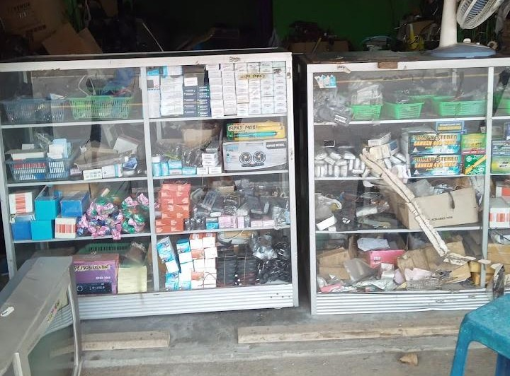
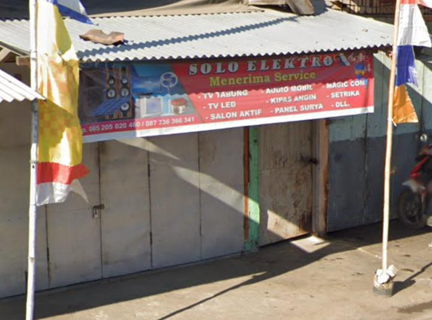

Solusi Servis Elektronik Terpercaya
Memperbaiki berbagai perangkat elektronik dengan keahlian dan layanan terbaik.
 Solo Elektro adalah layanan servis perbaikan alat elektronik terpercaya yang siap menyelesaikan masalahmu. Kami mengkhususkan diri dalam perbaikan berbagai perangkat elektronik, termasuk:
Dikelola oleh seorang teknisi ahli yang berpengalaman dalam berbagai perbaikan elektronik.
Biaya servis yang sesuai dengan kualitas pelayanan, tanpa mengorbankan kepuasan pelanggan.
Memberikan rasa tenang dengan garansi pada setiap servis kami, memastikan hasil yang memuaskan.
Kami berfokus pada solusi yang tahan lama untuk perangkat elektronik Anda, membuatnya lebih awet dan optimal.
Solo Elektro hadir untuk memastikan perangkat elektronik Anda tetap dalam kondisi prima dan siap digunakan kapan saja.
📍 Lokasi: Jalan Garudha, Labuhan Sumbawa, Labuhan Badas, Kabupaten Sumbawa
📞 Hubungi Kami: 0852-0502-0460